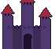
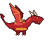
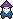
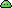
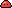
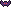
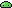
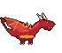

✦ Diário de desenvolvimento ✦
Salva o mundo da ameaça de fantasia medieval do mago maligno.





Só os pontos-chave do que o jogo já faz.

Capturas tiradas no próprio jogo. Clica para ampliar.

O devlog por dia: os prompts e os commits do jogo.